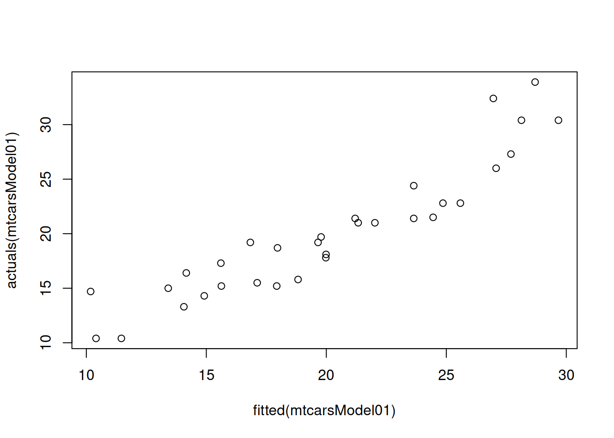

8.1 OLS estimation
In order to show how the estimation of multiple linear regression is done, we need to present it in a more compact form. In order to do that we will introduce the following vectors:
\[\begin{equation}
\mathbf{x}'_t = \begin{pmatrix}1 & x_{1,t} & \dots & x_{k-1,t} \end{pmatrix},
\boldsymbol{a} = \begin{pmatrix}a_0 \\ a_{1} \\ \vdots \\ a_{k-1} \end{pmatrix} ,
\tag{8.4}
\end{equation}\]
where \('\) symbol is the transposition. This can then be substituted in (8.1) to get:
\[\begin{equation}
y_t = \mathbf{x}'_t \boldsymbol{a} + \epsilon_t .
\tag{8.5}
\end{equation}\]
But this is not over yet, we can make it even more compact, if we pack all those values with index \(t\) in vectors and matrices:
\[\begin{equation}
\mathbf{X} = \begin{pmatrix} \mathbf{x}'_1 \\ \mathbf{x}'_2 \\ \vdots \\ \mathbf{x}'_T \end{pmatrix},
\mathbf{y} = \begin{pmatrix} y_1 \\ y_2 \\ \vdots \\ y_T \end{pmatrix},
\boldsymbol{\epsilon} = \begin{pmatrix} \epsilon_1 \\ \epsilon_2 \\ \vdots \\ \epsilon_T \end{pmatrix} ,
\tag{8.6}
\end{equation}\]
where \(T\) is the sample size. This leads to the following compact form of multiple linear regression:
\[\begin{equation}
\mathbf{y} = \mathbf{X} \boldsymbol{a} + \boldsymbol{\epsilon} .
\tag{8.7}
\end{equation}\]
Now that we have this compact form of multiple linear regression, we can estimate it using linear algebra. Many statistical textbooks explain how the following result is obtained (this involves taking derivative of SSE (7.4) with respect to \(\boldsymbol{a}\) and equating it to zero):
\[\begin{equation}
\hat{\boldsymbol{a}} = \left(\mathbf{X}' \mathbf{X}\right)^{-1} \mathbf{X}' \mathbf{y} .
\tag{8.8}
\end{equation}\]
The formula (8.8) is used in all the statistical software, including lm() function from stats package for R. Here is an example with the same mtcars dataset:
mtcarsModel01 <- lm(mpg~cyl+disp+hp++drat+wt+qsec+gear+carb, mtcars)The simplest plot that we can produce from this model is fitted values vs actuals, plotting \(\hat{y}_t\) on x-axis and \(y_t\) on the y-axis:
plot(fitted(mtcarsModel01),actuals(mtcarsModel01))
The same plot is produced via plot() method if we use alm() function from greybox instead:
mtcarsModel02 <- alm(mpg~cyl+disp+hp++drat+wt+qsec+gear+carb, mtcars, loss="MSE")
plot(mtcarsModel02,1)Figure 8.2: Actuals vs fitted values for multiple linear regression model on mtcars data.
We use loss="MSE" in this case, to make sure that the model is estimated via OLS. We will discuss the default estimation method in alm(), likelihood, in Section 13.
The plot on Figure 8.2 can be used for diagnostic purposes and in ideal situation the red line (LOWESS line) should coincide with the grey one, which would mean that we have correctly capture the tendencies in the data, so that all the regression assumptions are satisfied (see Section 12).